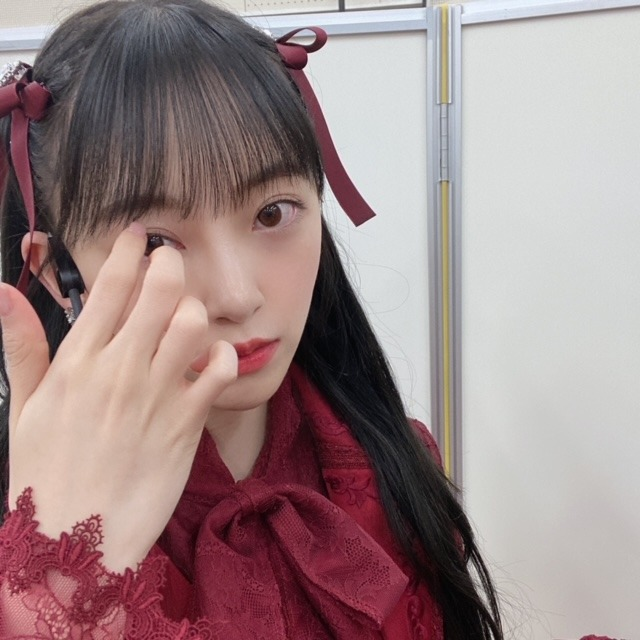

2021/0102Sat2021
あけましておめでとうございます．
今年もよろしくお願いします！

mステスーパーライブから
レコ大、紅白、CDTVと
怒涛の年末が終わり今はお家でまったりしてます
乃木坂46としての残りの時間、
楽しみたいと思います．
そして新たな道も、頑張りたいです．
2021年、笑いで溢れた1年にしたいな！
まぶし
あ、今月1/28発売の
platinum FLASH チェックしてください✨
表紙巻頭させていただいています


では
☺︎
2021/01/02 18:00
コメント(444)
年末年始のテレビ見たよ！
未央奈ちゃんがとても輝いてた！！！！！
アイドルとしての未央奈ちゃんもこれからの未央奈ちゃんもずっとずっと応援してるよ！！！！
未央奈ちゃんがとても輝いてた！！！！！
アイドルとしての未央奈ちゃんもこれからの未央奈ちゃんもずっとずっと応援してるよ！！！！
久しぶりの更新ありがとう
残り少ない時間を楽しんでね！
残り少ない時間を楽しんでね！
乃木坂であろうがなかろうが堀さんには変わりない。
あけましておめでとう✨
これからが堀ちゃんの時代なのに寂しい一年になりそう、、
健康な一年をおすごしください(^^)
これからが堀ちゃんの時代なのに寂しい一年になりそう、、
健康な一年をおすごしください(^^)
あけましておめでとうございます！
今年もお願いします！応援してます！！
今年もお願いします！応援してます！！
ブログもインスタも更新ありがとー！！
卒業を発表してからもずっと毎日未央奈しか考えられない。
毎日朝は写真集眺めてから学校に行かないと1日ほんとにやる気出ないし、授業中も集中できないことあったし。でも、発表後に改めて思ったのが「ほんと未央奈のこと好きだなー」って思った。
これからもたっくさん応援させてね。2020年、本当に幸せだった。2021年もよろしくね！！！
卒業を発表してからもずっと毎日未央奈しか考えられない。
毎日朝は写真集眺めてから学校に行かないと1日ほんとにやる気出ないし、授業中も集中できないことあったし。でも、発表後に改めて思ったのが「ほんと未央奈のこと好きだなー」って思った。
これからもたっくさん応援させてね。2020年、本当に幸せだった。2021年もよろしくね！！！
卒業しちゃうの寂しいけど、残りわずかな時間応援させてください♪
最後まで応援させてもらいます！
ブログ更新ありがとう！！
あけましておめでとう！
今年も色々頑張ってください！
あけましておめでとう！
今年も色々頑張ってください！
別れが刻一刻と近づいてきていることに悲しみを隠せません...
未央奈ー！！！ブログありがとう！めっちゃブログ楽しみにしてたよ！
今はお家でまったり出来てて本当に良かった(*^_^*)
Mステから各歌番組で毎回違う髪型をしてくれて本当に嬉しかったし、毎回違う髪型を見る事が出来て本当に楽しかったよ！楽しませてくれてありがとう。
私の母親もなんやかんや未央奈の事好きで｢未央奈ちゃん可愛い！｣っていつも言ってたよ笑(｡･ω･｡)
2021年も笑顔溢れる1年にしてほしいなぁー！
乃木坂46としての堀未央奈を見られる残りの時間、全力で応援するし見させていただく！
2021年以降、さらに未央奈が幸せになれる事を祈ってる。
未央奈はどのおせち料理が好き？
俺は黒豆と栗きんとんが好きだよ！笑(,,•﹏•,,)
紅白直前の番組でポニーテールで、本番ねじりハーフツインになってた時の感動は忘れられないよ。
未央奈はどの髪型でも可愛すぎるんだけど、やっぱりハーフツインハーフアップはえぐい可愛い！！！大好きなんよー！
年越しＣＤＴＶの時のツインテールも最強に可愛かったよ…まじで…
未央奈はやっぱり最強のアイドルだなぁーって思ってる。
ブログもう見られないと思ってたから本当に嬉しい…ありがとう…
今はお家でまったり出来てて本当に良かった(*^_^*)
Mステから各歌番組で毎回違う髪型をしてくれて本当に嬉しかったし、毎回違う髪型を見る事が出来て本当に楽しかったよ！楽しませてくれてありがとう。
私の母親もなんやかんや未央奈の事好きで｢未央奈ちゃん可愛い！｣っていつも言ってたよ笑(｡･ω･｡)
2021年も笑顔溢れる1年にしてほしいなぁー！
乃木坂46としての堀未央奈を見られる残りの時間、全力で応援するし見させていただく！
2021年以降、さらに未央奈が幸せになれる事を祈ってる。
未央奈はどのおせち料理が好き？
俺は黒豆と栗きんとんが好きだよ！笑(,,•﹏•,,)
紅白直前の番組でポニーテールで、本番ねじりハーフツインになってた時の感動は忘れられないよ。
未央奈はどの髪型でも可愛すぎるんだけど、やっぱりハーフツインハーフアップはえぐい可愛い！！！大好きなんよー！
年越しＣＤＴＶの時のツインテールも最強に可愛かったよ…まじで…
未央奈はやっぱり最強のアイドルだなぁーって思ってる。
ブログもう見られないと思ってたから本当に嬉しい…ありがとう…
ブログ更新ありがと〜！！！
未央奈ちゃんが出た歌番組すべて観たよ〜☺️
乃木坂の未央奈ちゃんを見れるのが少なくなると思うと悲しいです
未央奈ちゃんが出た歌番組すべて観たよ〜☺️
乃木坂の未央奈ちゃんを見れるのが少なくなると思うと悲しいです
明けましておめでとうございます
今年も益々ご活躍為れる事を願っています
今年も益々ご活躍為れる事を願っています
見たよ！
今年もよろしくね！
今年もよろしくね！
未央奈、あけましておめでとうございまーす！
全て見ましたよ
卒業まであと少しかぁ。
…寂しい
全て見ましたよ
卒業まであと少しかぁ。
…寂しい
あともう少しで卒業だね。卒業したら、僕と一緒に乃木坂46のファンになるね 明けましておめでとう。
明けましておめでとう。
明けましておめでとうございます！今年は、乃木坂からの卒業という大きな節目の年ですね。この１年が堀さんにとって素敵な１年になる様に、切に願っています。今年も精一杯応援していきますよ！
みおなちゃん更新ありがとう☺︎
残りの時間、ファンも大切に過ごします。
残りの時間、ファンも大切に過ごします。
未央奈さん、
あけましておめでとうございます。
2021年が未央奈さんにとって輝ける年でありますように。
卒業までの乃木坂の活動を楽しんでください。また、ファンとして未央奈さんの新たな出発を楽しみにしています。
どこまでも応援します。
あけましておめでとうございます。
2021年が未央奈さんにとって輝ける年でありますように。
卒業までの乃木坂の活動を楽しんでください。また、ファンとして未央奈さんの新たな出発を楽しみにしています。
どこまでも応援します。
久々のブログ更新ありがとうね！！
自分も今年の抱負は未央奈ちゃんと一緒で笑いで溢れた1年にしたいなぁ！！
お互い頑張ろうね！！
自分も今年の抱負は未央奈ちゃんと一緒で笑いで溢れた1年にしたいなぁ！！
お互い頑張ろうね！！
あけましておめでとう
今年も応援してます！
今年も応援してます！
あけましておめでとうございます
年末怒涛の歌番組出演
全て見ましたよー！！
高めのツインテール可愛いかったです☺︎
まだまだいけますよ！
乃木荘卒業の回も見ました。
未央奈のシュールなところが感じれてめっちゃ良かったです！
最後みんなが未央奈の卒業に対してコメントしてるところでジーンときましたね…
卒業までもうそんなに時間はありませんが
「冷たい水の中」をどこかで披露しているところを
早く見たいです。
でも披露しているということは卒業が間近に迫っているということになるわけで、複雑な気持ちです。
握手会やLiveに参加したことないので
卒業までに参加できるような状況になってたらいいなーと
願っております。
それでは
年末怒涛の歌番組出演
全て見ましたよー！！
高めのツインテール可愛いかったです☺︎
まだまだいけますよ！
乃木荘卒業の回も見ました。
未央奈のシュールなところが感じれてめっちゃ良かったです！
最後みんなが未央奈の卒業に対してコメントしてるところでジーンときましたね…
卒業までもうそんなに時間はありませんが
「冷たい水の中」をどこかで披露しているところを
早く見たいです。
でも披露しているということは卒業が間近に迫っているということになるわけで、複雑な気持ちです。
握手会やLiveに参加したことないので
卒業までに参加できるような状況になってたらいいなーと
願っております。
それでは
ブログ更新ありがとう！
そして明けましておめでとう！今はお家でゆったり出来ているみたいで良かった⸜(*ˊᵕˋ*)⸝
レコ大、紅白、CDTVと大好きな歌番組の未央奈ちゃんを観られて幸せな年末でした。色んな髪型で楽しませてくれてありがとう！
あまりの可愛さに目が冴えちゃって、寂しさと幸せで胸がいっぱいで、なかなか寝られなくて朝寝坊しまくりだった…笑
platinum FLASH楽しみにしてるね！
乃木坂46としての残りの時間も、これからの活動も楽しい思い出たくさんの素敵な一年になりますように。
私も一つ一つの活動をしっかり目に焼き付けます☺︎
そして明けましておめでとう！今はお家でゆったり出来ているみたいで良かった⸜(*ˊᵕˋ*)⸝
レコ大、紅白、CDTVと大好きな歌番組の未央奈ちゃんを観られて幸せな年末でした。色んな髪型で楽しませてくれてありがとう！
あまりの可愛さに目が冴えちゃって、寂しさと幸せで胸がいっぱいで、なかなか寝られなくて朝寝坊しまくりだった…笑
platinum FLASH楽しみにしてるね！
乃木坂46としての残りの時間も、これからの活動も楽しい思い出たくさんの素敵な一年になりますように。
私も一つ一つの活動をしっかり目に焼き付けます☺︎
ブログの更新ありがとう☺︎
あけましておめでとう！
2021年も笑顔で、
一緒に頑張ろうね！！
今後のブログも楽しみに待ってます！
体調には気をつけてね！
応援してます！
大好きです♡
未央奈ちゃんの笑顔が大好きなので、
最後まで笑顔で駆け抜けて欲しいです！！
あけましておめでとう！
2021年も笑顔で、
一緒に頑張ろうね！！
今後のブログも楽しみに待ってます！
体調には気をつけてね！
応援してます！
大好きです♡
未央奈ちゃんの笑顔が大好きなので、
最後まで笑顔で駆け抜けて欲しいです！！
あけおめみおな！
更新ありがとう
あけましておめでとうございます
今年もよろしくお願いします
今年もよろしくお願いします
更新ありがとう
あけましておめでとうございます
歌番組のたびにいろんな髪型の未央奈が見えて嬉しかった
乃木坂の残り時間ファンは一緒に走り続けます
あけましておめでとうございます
歌番組のたびにいろんな髪型の未央奈が見えて嬉しかった
乃木坂の残り時間ファンは一緒に走り続けます
大好き
あけましておめでとう！！
紅白の衣装可愛かった♡髪型も好き♡
紅白の衣装可愛かった♡髪型も好き♡
未央奈ーブログ更新ありがとう！！
あけましておめでとうございます！！
今年もよろしくお願いします！！
大好きです！
今年もずっと応援してます。
あけましておめでとうございます！！
今年もよろしくお願いします！！
大好きです！
今年もずっと応援してます。
あけましておめでとうございます！
みおなが卒業するなんて今でも信じられません
けどだからこそこれから卒業するまで精一杯応援したいと思います！！
みおなが卒業するなんて今でも信じられません
けどだからこそこれから卒業するまで精一杯応援したいと思います！！
やっほー♪
音楽番組いっぱい観たよ〜最高だった!!
これからも応援してます!!
音楽番組いっぱい観たよ〜最高だった!!
これからも応援してます!!
かわいい
未央奈ブログ更新ありがとう!(´▽｀)
カウントダウンTV年越しライブのツインテールめちゃくちゃ可愛かったよ〜
新年明けましておめでとうございます！
カウントダウンTV年越しライブのツインテールめちゃくちゃ可愛かったよ〜
新年明けましておめでとうございます！
未央奈さんのブログが読めるのも後数回か。。。
寂しくなるなぁ。。でもこれからも応援してます！！乃木坂としての残りの時間を頑張ってください！！大好きです！！
新潟県在住高校2年男子より。こうしたら課題が山積みです。笑
寂しくなるなぁ。。でもこれからも応援してます！！乃木坂としての残りの時間を頑張ってください！！大好きです！！
新潟県在住高校2年男子より。こうしたら課題が山積みです。笑
未央奈〜。2020年もお疲れ様！！
卒業発表聞いた時はすごく寂しくなって、何時間かぼーっとしてました。それぐらい寂しいです。
でも未央奈が決めた道だし、これからの未央奈も全力で応援します！！
唯一同じ岐阜県出身だったから会いたかったな。
バスラがもしあれば、絶対当てたい！！
卒業発表聞いた時はすごく寂しくなって、何時間かぼーっとしてました。それぐらい寂しいです。
でも未央奈が決めた道だし、これからの未央奈も全力で応援します！！
唯一同じ岐阜県出身だったから会いたかったな。
バスラがもしあれば、絶対当てたい！！
今年も応援しています！
みおなブログ更新ありがとう！
最近の活躍も全部チェックしてるよ〜
Mステスーパーライブも、CDTVも、レコ大も、紅白も！
全部に、最後の、がついて寂しいけど、楽しそうで何よりです。
あけましておめでとうございます、今年もよろしくお願いします
これからの活躍も楽しみにしています！
最近の活躍も全部チェックしてるよ〜
Mステスーパーライブも、CDTVも、レコ大も、紅白も！
全部に、最後の、がついて寂しいけど、楽しそうで何よりです。
あけましておめでとうございます、今年もよろしくお願いします
これからの活躍も楽しみにしています！
ブログ更新ありがとう！
あけましておめでとうございます。
レコード大賞、紅白、カウントダウン、見たよ！！
コロナで外に出れないので、家族全員で乃木坂を見届けました。
堀ちゃんがキラキラ輝いている姿がいつも素敵です。
堀ちゃんにとって良いと2021年になりますように
では、、
goodluck
あけましておめでとうございます。
レコード大賞、紅白、カウントダウン、見たよ！！
コロナで外に出れないので、家族全員で乃木坂を見届けました。
堀ちゃんがキラキラ輝いている姿がいつも素敵です。
堀ちゃんにとって良いと2021年になりますように
では、、
goodluck
未央奈ちゃんブログ更新有難う
未央奈ちゃんにとって笑顔で溢れる一年になりますように！
そんな未央奈ちゃんをみて私も幸せになれます！！
乃木坂としてはあと少しだけど、その後もずっと私の推しは未央奈ちゃんだけです！これからも1番だいすき！
未央奈ちゃんにとって笑顔で溢れる一年になりますように！
そんな未央奈ちゃんをみて私も幸せになれます！！
乃木坂としてはあと少しだけど、その後もずっと私の推しは未央奈ちゃんだけです！これからも1番だいすき！
年末、お仕事お疲れ様でした！
全部拝見してました！年末年始最高に楽しめました〜
これからも応援してます〜
全部拝見してました！年末年始最高に楽しめました〜
これからも応援してます〜
みおなちゃん！！
紅白とレコ大とカウコンよかったよ～！でも、最後って考えたら寂しくなっちゃう
あと、少しかもしれないけど会えるように祈ってます！
大好きだよ～♥愛してるよ～♥
中３女の子
紅白とレコ大とカウコンよかったよ～！でも、最後って考えたら寂しくなっちゃう
あと、少しかもしれないけど会えるように祈ってます！
大好きだよ～♥愛してるよ～♥
中３女の子
未央奈こんばんわー
ブログ更新嬉しいよ〜
2020年は卒業発表があったね2020年もありがとうございます
2021年では未央奈も乃木坂の未央奈も応援していくんで更なる活躍期待してます
ブログ更新嬉しいよ〜
2020年は卒業発表があったね2020年もありがとうございます
2021年では未央奈も乃木坂の未央奈も応援していくんで更なる活躍期待してます
未央奈さん
今年もよろしくお願いします。
未央奈さんのいい年になるように願っています。
今年もよろしくお願いします。
未央奈さんのいい年になるように願っています。
ラジオでバナナマンさんも言ってたけどこのまま乃木坂46に残っていればいいのに…なんて思っちゃったりもします、。でもみおなちゃんが決めたことならこれからも推し続けるし応援し続けます！
とても大事な年になりましたね^_^
素晴らしい2021年となりますように^_^
今日8thバースデーライブ4日間全て観ました^_^
サンエトがきいちゃんと蘭世の2人だけになるんだという現実を知りました^_^
素晴らしい2021年となりますように^_^
今日8thバースデーライブ4日間全て観ました^_^
サンエトがきいちゃんと蘭世の2人だけになるんだという現実を知りました^_^
こんばんは。
あけましておめでとうございます。
今年も体調に気をつけて笑顔で頑張ってくださいね。
応援しています。
あけましておめでとうございます。
今年も体調に気をつけて笑顔で頑張ってくださいね。
応援しています。
あけましておめでとうございます！今年も頑張ってください！応援してます！


健康に気をつけてください